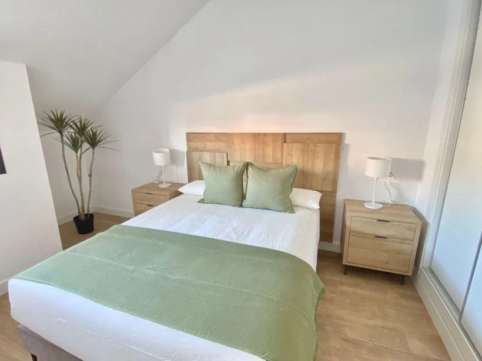

Camas hechas, cocina y baño revisados, textiles preparados y zonas comunes ordenadas antes de cada llegada.
Volver a servicios
Radiant Clean · Servicio especializado
Tu vivienda vacacional, siempre lista para la próxima entrada.
Radiant Clean coordina la limpieza, la revisión y el mantenimiento de viviendas turísticas para que cada huésped encuentre un espacio cuidado, ordenado y con el mismo nivel temporada tras temporada.
Costa del Sol
Supervisión directa
Equipo bajo un estándar común
Disponibilidad recurrente
Objetivo
Que cada huésped entre y note que la vivienda está atendida con cariño.
Cuidado de materiales, detección temprana de incidencias y atención a los detalles que evitan deterioros.
La vivienda mantiene el mismo nivel incluso en semanas de alta rotación, festivos o cambios rápidos.
Para propietarios y gestores
Delegar la limpieza sin perder el control del estado de la vivienda.
El servicio no termina con la limpieza: también permite detectar deterioros, necesidades de reposición e incidencias visibles antes de que afecten a la siguiente entrada.
Cuando existen varias propiedades, Radiant Clean coordina calendarios, prioridades y puntos de control para que cada entrega llegue a tiempo y con un estándar homogéneo.
- Planificación de entradasOrganización según calendario, rotación y prioridades de cada vivienda.
- Limpieza completaTrabajo ordenado en estancias, cocina, baño, textiles y exteriores.
- Revisión finalControl de presentación antes de entregar la vivienda al huésped.
Qué incluye el servicio
Todo lo que entra dentro de una entrega Radiant.
Te dejo el detalle de lo que reviso en cada entrada para que sepas exactamente qué esperar. No hay sorpresas y no hay "por hoy lo dejamos así".
Quiero una propuesta a medidaEstancias completasDormitorios, salón y zonas de paso aspirados, fregados y aireados.
Cocina y menajeSuperficies, electrodomésticos, vajilla revisada y reposición de básicos.
Baños a fondoLimpieza profunda, control de sarro, espejos y reposición de toallas.
Textiles y camasCambio de ropa de cama, planchado si toca y revisión de manchas.
Terraza y exteriorMobiliario, suelo y plantas ordenadas para recibir.
Parte de incidenciasAviso con foto al propietario o gestor cuando hay algo que reparar.

Checklist Radiant
Los detalles que elevan la valoración.
- Presentación cuidada de dormitorios y zonas de descanso.
- Cocina limpia, ordenada y lista para usar nada más entrar.
- Baños revisados con atención a superficies, juntas y acabados.
- Terrazas y espacios exteriores preparados para disfrutar.
- Aviso temprano de cualquier incidencia para actuar a tiempo.
“Tenemos nuestro apartamento en Fuengirola y desde que trabajamos con Radiant Clean no tenemos que mirar el móvil entre entrada y entrada. Los huéspedes y las valoraciones lo notan.”
Antes de empezar
Dudas frecuentes de propietarios.
Si tu caso necesita una valoración específica, Radiant Clean revisará contigo la propiedad, la rotación y las prioridades.
Consultar por WhatsApp¿Cómo se gestionan las llaves y los accesos?
El servicio puede coordinarse mediante cajas de seguridad, cerraduras inteligentes o entrega directa, según la operativa de cada propiedad.
¿Compráis vosotros los consumibles y la lencería?
La reposición de básicos y la rotación de textiles pueden coordinarse dentro del servicio o integrarse con el proveedor habitual del cliente.
¿Atendéis cambios de huésped el mismo día?
Sí. Las salidas y entradas en el mismo día se integran en la planificación para que la vivienda quede lista antes del check-in.
¿Qué pasa si los huéspedes rompen o estropean algo?
La incidencia se comunica y documenta para que el propietario o gestor pueda actuar, gestionar un cargo o tramitar el seguro.